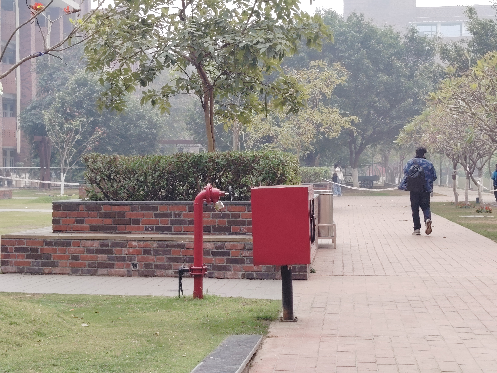
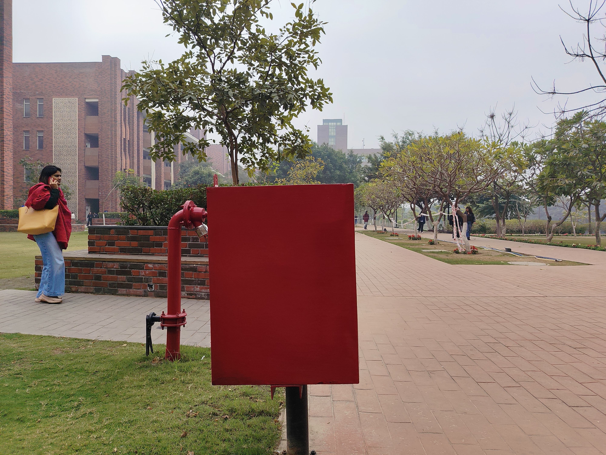

Problem 1: Portrait Perspective (1× vs 3x vs 5×)
I took three photographs of the same person (my sister) using : 1×, 3×, and 5× zoom. The goal was to keep the face approximately the same size in the image while changing the distance between the camera and the subject.
1× (close to subject):
In the 1× image, the camera was placed very close to the subject. Even though the face fills a similar portion of the frame, the image appears noticeably distorted. Facial features closer to the camera, such as the nose, appear larger, while features farther away, such as the ears, appear smaller. This happens because different parts of the face are at significantly different distances from the camera, causing strong perspective effects.
3× (away with 3x zoom):
In the 3× image, the camera is slightly farther away and zoom is used to maintain the same framing. The distortion is reduced compared to the 1× image, but some perspective effects are still visible.
5× (farther away with 5x zoom):
In the 5× image, the camera is placed several feet away and a higher zoom is used to keep the face size similar. In this case, the face looks much more natural and proportionate. The reason is that when the camera is far from the subject, the relative depth differences between facial features become small compared to the camera–subject distance. As a result, the projection becomes closer to orthographic, reducing perspective distortion.
These images demonstrate how perspective distortion is primarily controlled by camera distance, not zoom. Zoom only affects the field of view, while distance of camera from the subject determines how depth differences are projected onto the image. This is why portraits taken from farther away with zoom generally look more realistic than close-up wide-angle photos.
Vote on GitHub (👍 / 👎)
Problem 2: Perspective Compression in an Urban Scene (1× vs 3x)
I took photographs of a fire hose box on University Campus using two different camera setups while keeping the apparent size of the scene approximately the same.
1× (away with 3x zoom):

In the first image, I stood far away from the scene and used zoom to frame it. This image appears visually flattened or compressed. Objects at different depths along the campus—such as buildings, poles, or trees appear closer together than they actually are.
1× (close to subject - 1x):

In the second image, I walked closer to the scene and took the photograph without zoom. Although the scene appears similar in size, the depth relationships are much more pronounced. Objects closer to the camera appear significantly larger than those farther away, and the spacing between elements in the image becomes more evident.
This difference occurs because perspective distortion depends on the distance between the camera and the scene, not on zoom. When the camera is far away, depth differences along the street are small relative to the camera distance, causing depth to be compressed. When the camera is closer, these depth differences become significant, resulting in stronger perspective effects.
Vote on GitHub (👍 / 👎)
Problem 3: Perspective vs Approximate Orthographic Projection
I captured two images of a rectangular table containing clear straight edges.
The goal was to compare perspective projection with an approximate orthographic projection
using different camera settings.
Perspective Projection (Camera Close to Scene)

In this image, the camera was placed relatively close to the scene with no zoom.
The red lines highlight straight edges in the scene. Although these edges are parallel in
the real world, they clearly appear to converge in the image. This convergence is a result
of perspective projection, where objects farther from the camera are projected to smaller
sizes, causing parallel lines to meet at vanishing points.
Approximate Orthographic Projection (Camera Far with 3x Zoom)

In this image, the camera was placed farther away from the scene, and 3x zoom was used to maintain a similar framing. The red lines drawn
along the same types of edges are not perfectly parallel, but they are noticeably less
convergent compared to the perspective projection image.
This occurs because a true orthographic projection cannot be achieved using a standard
camera. However, increasing the camera distance reduces the effect of depth variation
relative to the camera distance, making the projection behave more like an orthographic
projection. As a result, parallel edges appear much less convergent, with significantly reduced
perspective distortion.
Vote on GitHub (👍 / 👎)
Assignment 2: Corners, Features, and a Pesky Tree
By Shubham Agarwal (Shubh)
Part A: Hunting for Corners at Ashoka
For the first half of this project, I headed out and took a high-res photo of one of the buildings here at Ashoka University. I was looking for something with plenty of sharp, geometric lines—perfect for testing a corner detector.
What I did:
I started by manually clicking and annotating 50 specific corners on the building facade to create my "ground truth." Then, I ran the CV2 Harris Corner detector on the image. Since the detector gives a score for every pixel, I had to test it against 10 different thresholds to see how "picky" the algorithm should be.

I plotted the detections (Red) against my clicks (Green). As the threshold goes up, the noise disappears.
What I observed:
When I plotted the Precision-Recall curve, I got an AUC of 0.0028. At first, that number seemed tiny! But when I looked closer at my grid, I realized why. The Harris detector is incredibly sensitive; it was picking up every single brick texture and reflection on the glass.
Because I only annotated 50 "main" corners, all those other mathematically correct corners were marked as "False Positives," which tanked my precision. It was a great lesson in how human intuition and raw math don't always align in computer vision.
Part B: The Mulch Stack & The SIFT Paradox
In the second part, I worked with a sequence of 19 images showing a camera moving around a stack of mulch bags. Things got interesting halfway through when a large tree trunk moved directly between the camera and the stack.
The Matching Experiment:
I used SIFT to extract features and matched them in two ways: first between consecutive frames (the natural order) and then between 19 pairs of random frames.
| My Results |
Consecutive Pairs |
Random Pairs |
| Total Matching Cost |
1,534,980 |
1,462,135 |
| Average Matches |
7,718.6 |
5,569.1 |
| Avg. Cost per Match |
209.24 |
264.63 |
Answering the Big "Why":
Wait—why was my Total Cost higher for consecutive frames? It felt like a mistake at first! But then I noticed the Match Count.
Because consecutive images look so similar, SIFT found way more matches (over 2,000 more!). Since the total cost is just the sum of all distances, more matches naturally create a bigger number. The real proof is in the Average Cost per Match:
- Consecutive (209.24): Low average distance means the features matched very accurately.
- Random (264.63): High average distance shows the descriptors were struggling to find similarities.
The Tree Factor: I also noticed a huge spike in cost when the tree trunk appeared. The tree bark has a completely different texture than the mulch bags. SIFT was forced to match "bark" to "plastic," which led to high Euclidean distances and poor matching quality.